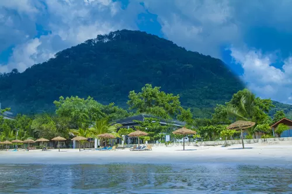
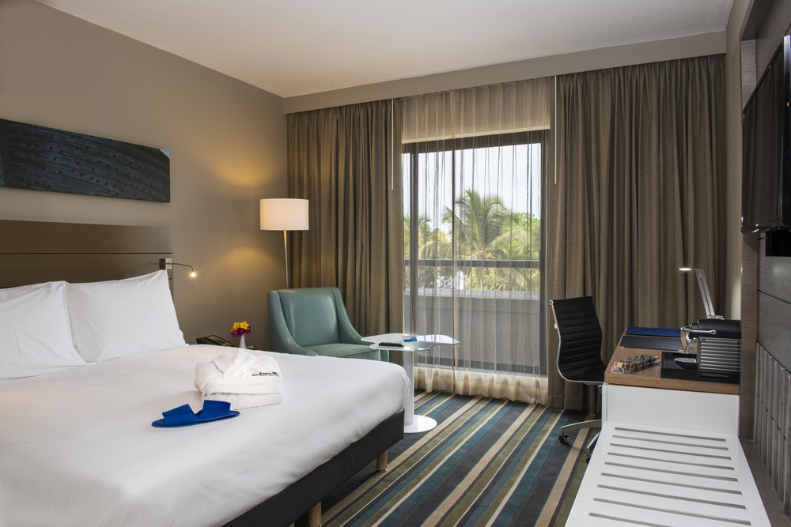
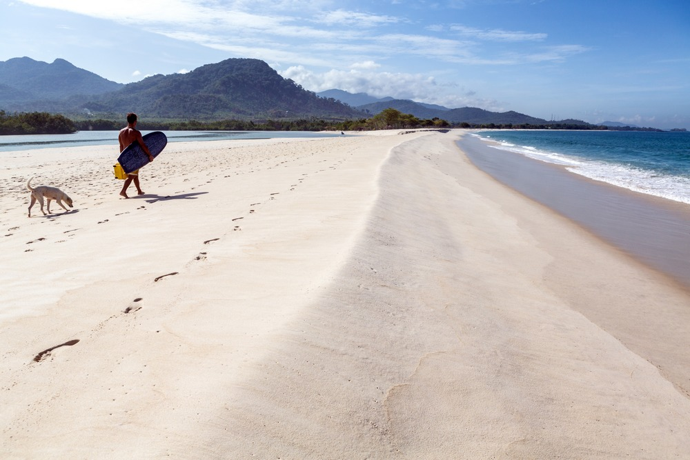

Tokeh Beach
Tokeh is one of the Freetown peninsula’s most developed beaches and one of the most popular. Its vast stretches of white sands are just a ten-minute drive by 4x4 from River Number Two, or under an hour from Freetown.

Lakka Beach
Lakka Beach is a welcome haven of tranquillity for those escaping the city. Restaurants serving outstanding seafood are perched on the golden sands, and service from the local beach boys is impeccable.

River Number Two Beach
River Number Two is just 30km south of Freetown. However, like most beaches on the peninsula it’s totally unspoilt. Run by a cooperative set up following the civil war, all profits go straight back into the community.